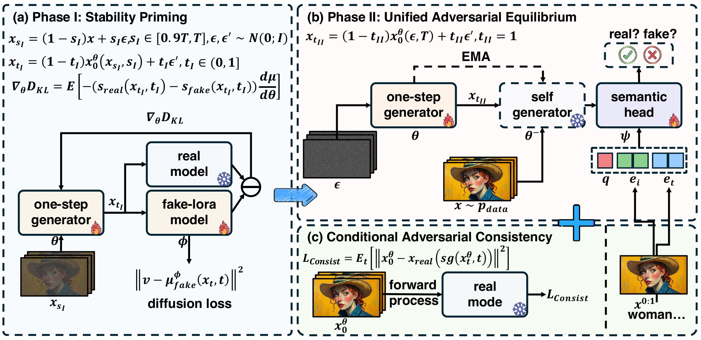

The field of video diffusion generation faces critical bottlenecks in sampling efficiency, especially for large-scale models and long sequences.
Existing video acceleration methods adopt image-based techniques but suffer from fundamental limitations: they neither model the temporal coherence of video frames nor provide single-step distillation for large-scale video models.
To bridge this gap, we propose POSE (Phased One-Step Equilibrium), a distillation framework that reduces the sampling steps of large-scale video diffusion models, enabling the generation of high-quality videos in a single step.
POSE employs a carefully designed two-phase process to distill video models:
(i) stability priming: a warm-up mechanism to stabilize adversarial distillation that adapts the high-quality trajectory of the one-step generator from high to low signal-to-noise ratio regimes, optimizing the video quality of single-step mappings near the endpoints of flow trajectories.
(ii) unified adversarial equilibrium: a flexible self-adversarial distillation mechanism that promotes stable single-step adversarial training towards a Nash equilibrium within the Gaussian noise space, generating realistic single-step videos close to real videos. For conditional video generation, we propose
(iii) conditional adversarial consistency, a method to improve both semantic consistency and frame consistency between conditional frames and generated frames.
Comprehensive experiments demonstrate that POSE outperforms other acceleration methods on VBench-I2V by average 7.15% in semantic alignment, temporal conference and frame quality, reducing the latency of the pre-trained model by 100, from 1000 seconds to 10 seconds, while maintaining competitive performance.
Method

Overview. POSE employs a two-phase process to distill large-scale video models.
(a) Phase I: Stability Priming.
This priming phase enables robust single-step adversarial distillation by aligning the student model distribution with real videos, utilizing a frozen real model and a trainable fake-LoRA model initialized from scratch.
(b) Phase II: Unified Adversarial Equilibrium.
In this phase, building upon the primed model, the generator parameters are repurposed as the discriminator backbone to extract video features from Gaussian noise, achieving adversarial equilibrium.
(c) Conditional Adversarial Consistency.
For conditional video generation, we introduce a discriminator head and a frame consistency loss to prevent conditional frame collapse and promote temporal coherence between conditional and generated frames.
Qualitative Performance
We provide qualitative visualization for "POSE-1NFE Generation", "Comparison with Other Distillation Methods",
and "Comparison with Wan-I2V (Baseline)".
POSE-1NFE I2V Generation for Human
We provide single-step video generation for human, which is in shape of 720x1280 resolution.
A regal woman adorned in an elaborate black gown with intricate gold embroidery and a vibrant red sleeve stands gracefully in a grand room. Her attire is complemented by a golden crown embellished with jewels and red roses, along with a matching necklace and earrings. The background features ornate curtains and framed artwork, adding to the opulent setting. The subject remains still, exuding an air of elegance and authority. The camera slowly pans around her, capturing the detailed craftsmanship of her clothing and the luxurious surroundings, while maintaining a steady focus on her as she stands poised and composed.
A cheerful young girl with brown hair adorned with a yellow flower clip stands amidst a vibrant field of wildflowers, her eyes sparkling with joy as she smiles warmly at the camera. Her hair gently sways in the breeze, adding a sense of movement to the scene. The camera pans slowly from left to right, capturing the girl's delighted expression and the colorful array of flowers around her, creating a dynamic and engaging visual experience.
A woman with vibrant red hair and striking green eyes, wearing a wide-brimmed straw hat and a denim jacket, stands against a bright yellow background. Her expression is contemplative as she gazes off to the side. The camera slowly pans around her, capturing her from different angles while maintaining a steady focus on her face and upper body, highlighting the texture of her hair and the details of her attire.
The subject is a young woman with long, wavy blonde hair and freckles on her face, gazing directly at the camera with a serene expression. She remains still throughout the sequence, maintaining eye contact with the viewer. The camera moves smoothly from left to right, capturing her from a slightly low angle, emphasizing her facial features and the texture of her hair. The background is softly blurred, keeping the focus on the subject.
A newborn baby is peacefully sleeping on its side, nestled on a soft, textured white blanket. The baby's head is slightly tilted, and its eyes are closed, conveying a sense of tranquility. The baby's skin is smooth and fair, and its tiny hands rest gently on its chest. The camera slowly pans from left to right, capturing the serene expression of the sleeping baby while maintaining a steady focus on the subject. The background remains softly blurred, ensuring that the viewer's attention stays on the baby.
A quartet of musicians dressed in formal black suits are seated in a warmly lit room, each playing their respective instruments: violins, viola, and cello. The violinists are positioned on the left side, with one holding an open music book while the other plays from memory. The cellist sits on the right, deeply focused on his instrument. The camera pans slowly from left to right, capturing the intricate movements of each musician as they perform. The background features a framed portrait of a man playing a flute, adding an artistic touch to the scene, with soft candlelight illuminating the room, creating a serene and intimate atmosphere.
POSE-1NFE I2V Generation for Scene
We provide single-step video generation for Scene, which is in shape of 720x1280 resolution.
The scene depicts a vibrant street at dusk, illuminated by warm streetlights and glowing shop windows, creating a lively and inviting atmosphere. The main subject is a person walking down the street, moving from left to right, their figure slightly blurred as they move, suggesting a steady pace. The camera follows the subject smoothly, maintaining a consistent distance, panning slightly to the right to keep the subject centered as they walk deeper into the street. The background features a mix of colorful buildings, a church steeple, and a bright, swirling sun in the sky, adding depth and a sense of movement to the scene.
The scene captures a serene rainy day on a city street lined with colorful umbrellas and potted flowers, creating a vibrant contrast against the wet pavement. The umbrellas, ranging from red to yellow and blue, are open, providing shade to the wooden benches beneath them. The buildings on either side of the street are tall and historic, with ornate facades and balconies. The camera pans slowly from left to right, capturing the tranquil atmosphere as raindrops fall gently onto the ground, reflecting the colors of the umbrellas. The distant church steeple looms in the background, adding depth to the scene.
The serene winter forest scene features tall evergreen trees heavily laden with snow, creating a picturesque and tranquil atmosphere. The sun, positioned low on the horizon, casts a warm, golden glow through the branches, illuminating the snow-covered landscape. A narrow, snow-dusted path winds through the center of the frame, leading the viewer's eye deeper into the forest. The subject, the snow-covered trees, remain stationary as the camera moves smoothly forward along the path, capturing the beauty of the winter scene from a slightly elevated angle, providing a comprehensive view of the forest's majesty and the interplay of light and shadow.
A wooden sailboat gently drifts on a calm river under a vibrant sunset sky, its sails unfurled and catching the last rays of sunlight. The boat moves slowly forward, creating ripples in the water as it glides through the tranquil scene. The camera pans smoothly from left to right, following the boat's journey across the river, capturing the serene beauty of the landscape and the warm hues of the sky.
The scene captures a bustling city street at dusk, illuminated by the warm glow of streetlights and storefronts. The wet pavement reflects the lights, creating a vibrant and dynamic atmosphere. Pedestrians walk along the sidewalks, some in groups, others alone, while cars drive down the street, their headlights piercing through the dimming sky. The buildings on either side are lined with shops and cafes, their signs glowing brightly against the darkening backdrop. The camera pans slowly from left to right, following the flow of people and vehicles, providing a comprehensive view of the lively urban environment.
The scene captures a rainy evening on a city street viewed through a window with raindrops streaming down. The buildings on either side of the street are bathed in the soft glow of streetlights, creating a warm contrast against the cool blue tones of the overcast sky. The camera remains stationary, focusing on the wet pavement reflecting the lights from the cars and street lamps, while the raindrops on the window add a dynamic element to the otherwise still scene.
POSE-1NFE I2V Generation for Animal
We provide single-step video generation for Animal, which is in shape of 720x1280 resolution.
A curious golden puppy and an energetic orange kitten are running towards the camera on a carpeted floor scattered with colorful balls and treats. The puppy, with its ears flopping slightly, leads the way, while the kitten follows closely behind, its tail swishing. The camera moves forward smoothly, maintaining a steady focus on the animals as they approach, capturing their playful energy and the warm, sunlit room around them.
A playful orange and white kitten with striking green eyes is captured mid-stride as it chases a red ball of yarn across a light beige background. The kitten's fur is soft and fluffy, with white paws and a white chest contrasting against its orange and white striped body. Its tail is raised high, indicating excitement and energy. The kitten's mouth is slightly open, suggesting it might be meowing or reacting to the yarn. The camera follows the kitten smoothly from left to right, maintaining a steady focus on the kitten while the yarn trails behind, creating a dynamic sense of motion. The background remains softly blurred, emphasizing the kitten's playful action.
A powerful black horse gallops across a sandy terrain, its mane and tail flowing wildly behind it as it moves at full speed. The horse's muscles ripple under its sleek coat, and dust rises from the ground beneath its hooves. The camera follows the horse closely, panning smoothly to keep it centered as it races forward, capturing the dynamic energy and grace of the animal in motion.
A vibrant red and white koi fish gracefully swims towards the right side of the frame, its scales shimmering under the water's surface. The camera follows the fish smoothly, maintaining a steady focus as it moves through the tranquil pond adorned with floating lily pads and delicate pink lotus flowers. The lush green foliage surrounding the pond adds depth and tranquility to the scene, creating a serene and picturesque environment.
A vibrant red fox with a bushy tail and white underbelly is captured mid-stride on a forest path, its ears perked up as it moves forward with purpose. The camera follows the fox from behind, maintaining a steady pace to keep the animal centered in the frame, smoothly panning to the right as the fox continues along the path, showcasing the lush greenery and scattered rocks around it.
A majestic tiger, its vibrant orange fur adorned with bold black stripes, stands amidst lush green foliage, its piercing yellow eyes fixed directly on the camera. The tiger's mouth is slightly open, revealing sharp teeth, as it appears to be mid-roar, exuding an aura of power and dominance. The camera, positioned at a low angle, slowly pans upwards and to the right, following the tiger's gaze, while simultaneously zooming in slightly to capture the intricate details of its face and the surrounding dense forest environment.
Object
A succulent piece of grilled fish sits atop a bed of linguine pasta garnished with vibrant cherry tomatoes, fresh basil leaves, and a sprinkle of red pepper flakes, all arranged on a light green plate with a brown rim. The camera pans slowly from left to right, capturing the glistening surface of the fish and the colorful, appetizing toppings, while the plate remains stationary, emphasizing the textures and colors of the dish.
The cheerful snowman, Olaf from Frozen, stands upright on a snowy landscape, his carrot nose and stick arms slightly swaying as he looks around with a joyful expression. The camera pans slowly to the right, capturing the serene winter scene with snow-covered trees and falling snowflakes, while maintaining focus on Olaf, who continues to smile warmly at the viewer.
A sleek red sports car, likely a high-performance model, is captured in motion on a winding mountain road during sunset. The car's headlights are on, illuminating the road ahead as it speeds along, its tires leaving a slight blur due to the high speed. The background features a picturesque landscape with rolling hills, lush greenery, and distant mountains silhouetted against the setting sun. The sky is a gradient of warm hues, transitioning from orange near the horizon to a softer blue higher up. The camera follows the car from a slightly elevated angle, maintaining a steady focus on the vehicle while smoothly panning to keep it centered as it moves through the frame, creating a dynamic sense of speed and motion.
Qualitative Comparison
We provide qualitative visualization for "Comparison with Other Distillation Methods",
and "Comparison with Wan-I2V (Baseline)".
Comparison with Wan-I2V (Baseline)
Wan-I2V-100NFE inference videos with 50-step and guidance scale = 6;
Wan-I2V-1NFE inference videos with 1-step and guidance scale = 1;
POSE-1NFE inference videos with 1-step and guidance scale = 1.
Prompt: A quartet of musicians dressed in formal black suits are seated in a warmly lit room, each playing their respective instruments: violins, viola, and cello. The violinists are positioned on the left side, with one holding an open music book while the other plays from memory. The cellist sits on the right, deeply focused on his instrument. The camera pans slowly from left to right, capturing the intricate movements of each musician as they perform. The background features a framed portrait of a man playing a flute, adding an artistic touch to the scene, with soft candlelight illuminating the room, creating a serene and intimate atmosphere.
Prompt: A regal woman adorned in an elaborate black gown with intricate gold embroidery and a vibrant red sleeve stands gracefully in a grand room. Her attire is complemented by a golden crown embellished with jewels and red roses, along with a matching necklace and earrings. The background features ornate curtains and framed artwork, adding to the opulent setting. The subject remains still, exuding an air of elegance and authority. The camera slowly pans around her, capturing the detailed craftsmanship of her clothing and the luxurious surroundings, while maintaining a steady focus on her as she stands poised and composed.
WanI2V-100NFE, Guidance Sclae=6
WanI2V-2NFE, Guidance Sclae=6
POSE-1NFE, Guidance Sclae=1
Qualitative Comparison with Other Distillation Works
We compare with other distillation works, including "APT" and "ADD" on adversarial distillation, "MagicDistillation" and "DMD2" on distribution matching distillation,
and "PCM" on consistency distillation.
POSE-1NFE (Ours)
ADD-1NFE
APT-1NFE
PCM-1NFE
DMD2-1NFE
MagicDistillation-1NFE
POSE-1NFE (Ours)
ADD-1NFE
APT-1NFE
PCM-1NFE
DMD2-1NFE
MagicDistillation-1NFE
POSE-1NFE (Ours)
ADD-1NFE
APT-1NFE
PCM-1NFE
DMD2-1NFE
MagicDistillation-1NFE
BibTeX
@misc{cheng2025pose,
title={POSE: Phased One-Step Adversarial Equlibrium for Video Diffusion Models},
author={Jiaxiang Cheng and Bing Ma and Xuhua Ren and Hongyi Jin and Kai Yu and Peng Zhang and Wenyue Li and Yuan Zhou and and Tianxiang Zheng and Qinglin Lu},
year={2025},
eprint={2506.17201},
archivePrefix={arXiv},
primaryClass={cs.CV},
url={https://arxiv.org/abs/2506.17201},
}